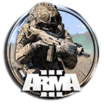
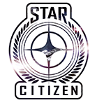
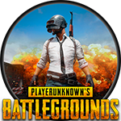
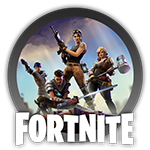
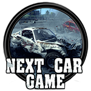

Créée en décembre 2007 de l'envie du meneur actuel et avec l'aide d'un camarade de jeux. La Meute dans sa première mouture évoluait sur Call of Duty 4. Son ambition était alors d'atteindre les sommets des ligues pour amateurs. Elle recrutait en ce sens et la formule fonctionnait.
Petit à petit, les attentes des uns et des autres ont évolué jusqu’à ce que la Meute se scinde en deux groupes. Les hardcores gamers fidèles à l'idée originelle et les casuals gamers qui préféraient jouer plus fun afin d'éviter les prises de tête d'après-match.
La Meute mua alors pour passer en version 2.0 en août 2010. Quelles nouveautés ? Une partie des loups a quitté la tanière pour aller fonder une équipe qui correspondait plus à leurs attentes (et qui n'a pas tenu 4 mois d'ailleurs). La deuxième partie, le noyau dur, a persévéré et La Meute a retravaillé ses bases. Elle a successivement évolué sur BF : BC2, BF3, GW2 et a désormais posé ses valises sur Arma 3 !
Quatre ans après sa création, La Meute est devenue une association officielle au sens de l'article 5 de la loi de juillet 1901. Elle se dote d'un bureau solide composé de membres responsables, d'une trésorerie claire, officielle et juste et d'une existence juridique. Ce statut lui confère une stabilité accrue et pérenne ! 10 ans plus tard, La Meute 2.0 est toujours là !
Notre tag : =CL= pour Canis lupus qui signifie loup en latin. Chaque loup fait donc partie de cette Meute. Notre univers virtuel est pour nous une tanière. Le discord nous permet de hurler à la lune et de nous sentir le... enfin, nous communiquons, quoi ! :)
La devise se résume ainsi : Les plus forts ne sont pas ceux qui ne tombent jamais, mais ceux qui se relèvent toujours. Notre adage est le suivant : A vaincre sans périls, on triomphe sans gloire.
Comme dans toute Meute digne de ce nom, il existe une hiérarchie. Le meneur, Mantorn, emmène ses troupes, il est le loup Alpha. KrissG60 est son bras droit (le loup Beta), il s'occuppe également de la trésorerie. Cymmus s'occupe du secrétariat. Il y a de nombreux rôles qui apparaissent et disparaissent dans La Meute, à l'instar de l'Oméga qui s'occupe de nous faire rire malgré lui ! C'est un titre qui tourne et qui est décerné au loup qui fait le plus de gaffes ! Mais ne vous y trompez pas, si chaque loup n’apparaît pas dans cette liste, il n'en possède pas moins un rôle au sein de la Meute. Les loups ont des droits, mais aussi des devoirs envers leur Meute.
Actuellement, nous évoluons sérieusement sur Squad où nous construisons un jeu cohérent, sérieux et utile. Mais nous surfons aussi sur plein d'autres jeux ! PUBG, StarCitizen, Fortnite, Warframe, etc. Nous naviguons au gré des sorties, des hits et des envies !
    
Notre principale force réside dans chacun de nos loups. Nous sélectionnons minutieusement chaque recrue pour s'assurer qu'elle collera parfaitement avec l'esprit du clan. Pour son bien-être ainsi que pour celui du clan.
Tout d'abord, nous recherchons des personnes matures âgées au moins de 18 ans (et même de 20-25 ans si possible). Et ces personnes doivent être sûres de ce qu'elles cherchent, car nous sommes sûrs de ce que nous leur proposons. A savoir :
A votre arrivée dans la tanière, si vous êtes candidat, voici ce qui se passera : Vous allez tout d'abord présenter votre candidature. Vous serez rapidement intégré au groupe des candidats qui n'a pas accès à énormément de choses sur Discord, mais vous aurez rapidement tous les accès pour nous rejoindre en vocal et en jeu. Une fois le contact établi avec les loups de la Meute et un premier vote en interne effectué en fonction de cet échange, vous serez intégré (ou non) au groupe des louveteaux en quelques semaines. Ce groupe dispose d'un accès conséquent, presque intégral. Le louveteau est considéré comme un loup normal quant à son droit de participer aux soirées, à donner son avis, à proposer des idées, etc... Au bout d'un ou deux mois, quand l'ensemble de la Meute aura pu se faire un avis précis sur son comportement, un nouveau vote sera lancé en interne et il sera finalement intégré officiellement dans la meute avec une petite cérémonie (préparée spécialement en son honneur et unique) et une communication officielle.
Si vous pensez vous être reconnu dans la description de notre clan, vous êtes surement fait pour La Meute ! Rejoignez-nous !